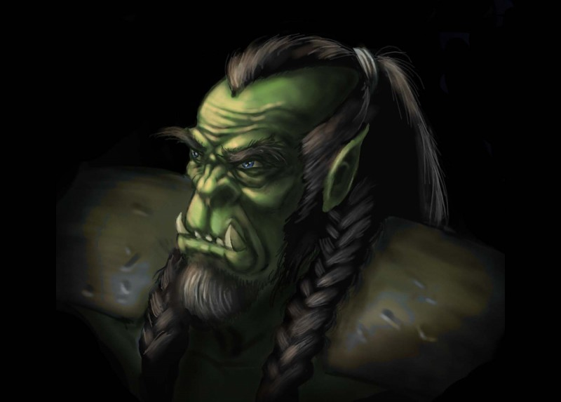
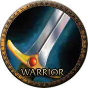
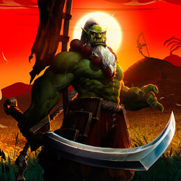
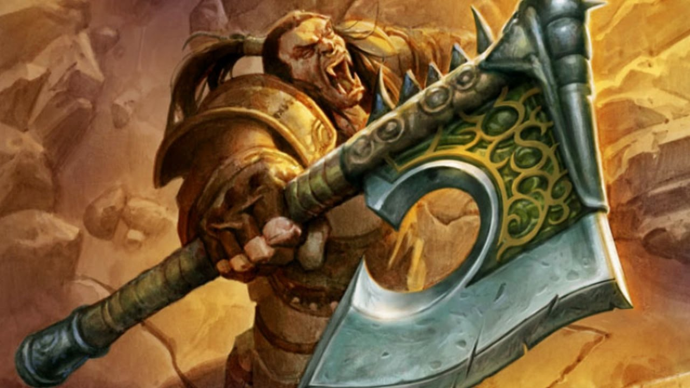
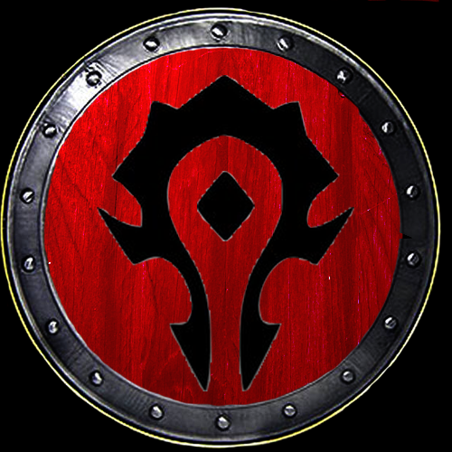
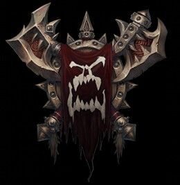
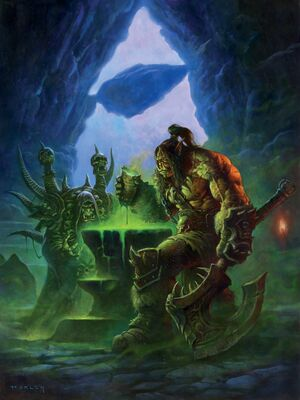
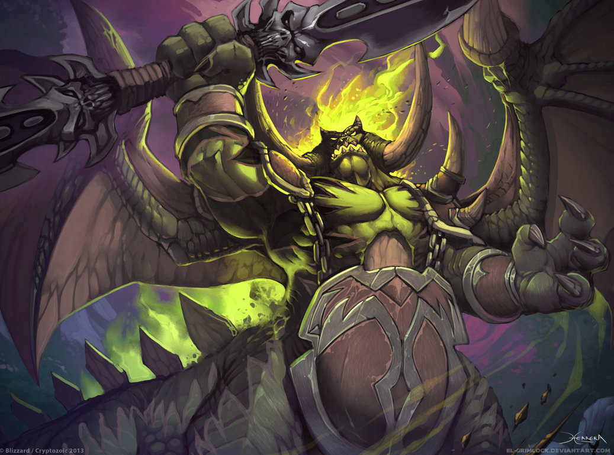

Grommash «Grom» Hellscream
Résumé
— Throm-Ka, young hero! I am the legendary chieftain of the Warsong clan, a powerful warrior, close friend, and greatest lieutenant to Warchief Thrall. I am the first orc who drank the blood of Mannoroth the Destructor, thus binding the Horde to the Burning Legion and i paid the ultimate price to free myself and my people from the Blood Curse.
Experience
Early history
-
23th December 1994
Becomes the chieftain of the Warsong clan
-
14th February 1995
-
3th June 1995
Leads raids on ogre lands
-
30th August 1995
Grom is captured by the ogres
Rise of the Horde
-
12th September 1994
Grom was present at the Kosh'harg celebration in Nagrand
-
2th October 1994
Grom opposed the leader of the Frostwolf clan to defend a new era of war and state and drank the blood of Mannoroth
-
28th October 1994
Invaded Shattrath against draenei
-
13th November 1994
Fought against Nobundo
Beyond the Dark Portal
-
9th December 1995
The Warsong clan was spared the defeats of the Second War since Gul'dan manipulated Grom into staying behind on Draenor
-
14th July 1996
The Horde was defeated by the Alliance of Lordaeron
-
20th December 1998
He alongside Kargath Bladefist were summoned to join the reformed Horde
-
15th February 1999
Grom and Rexxar led the attack on Nethergarde Keep
-
3th January 2000
He battled against the Alliance for the control of the Azerothian side of the Dark Portal
Revitalization of the Horde
-
2th December 2000
Grom and the Warsong clan were forced into hiding in the wilds of Lordaeron
-
12th March 2001
Grom was forced to fight the demonic curse that had left him weakened and listless.
-
11th April 2002
Grom met a young chieftain named Thrall
Reign of Chaos
Invasion of Kalimdor
-
19th September 2001
Grom and his Warsong clan were separated from Thrall's fleet and made landfall on Kalimdor
-
21th November 2001
Grom could not contain his bloodlust and instigated attacks on the human encampments
-
23th December 2001
The fight with the demigod Cenarius and the appearance of the Mannoroth
-
5th April 2002
By drinking the Blood of Mannoroth, the Warsong clan was once again susceptible to the vile pit lord's control
Redemption and death
-
11th May 2002
Thrall and Grom set out to hunt down Mannoroth and located the vile demon in what is now Demon Fall Canyon in Ashenvale
-
12th May 2002
Grom charged Mannoroth and sank Gorehowl into his chest, shattering the breastplate and slicing through to the infernal heart of the demon
-
12th May 2002
Exhausted by the infernal flame of Mannoroth Grom dies
Race

Gender
Class


Weapon

Affilations


Skin color

Status
